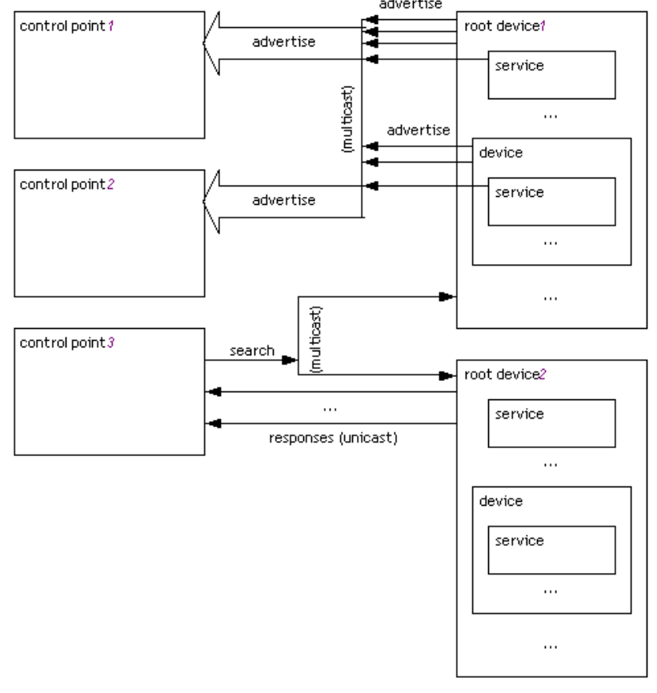
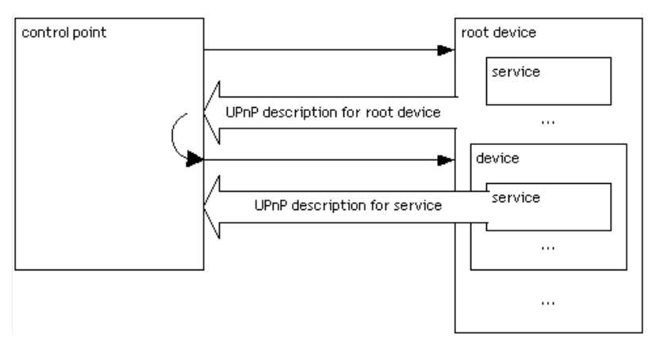
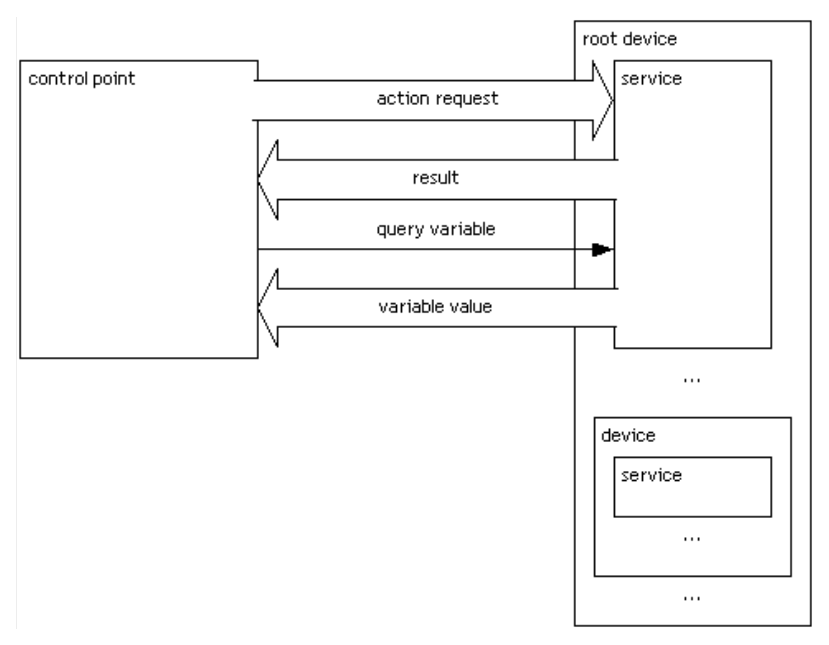
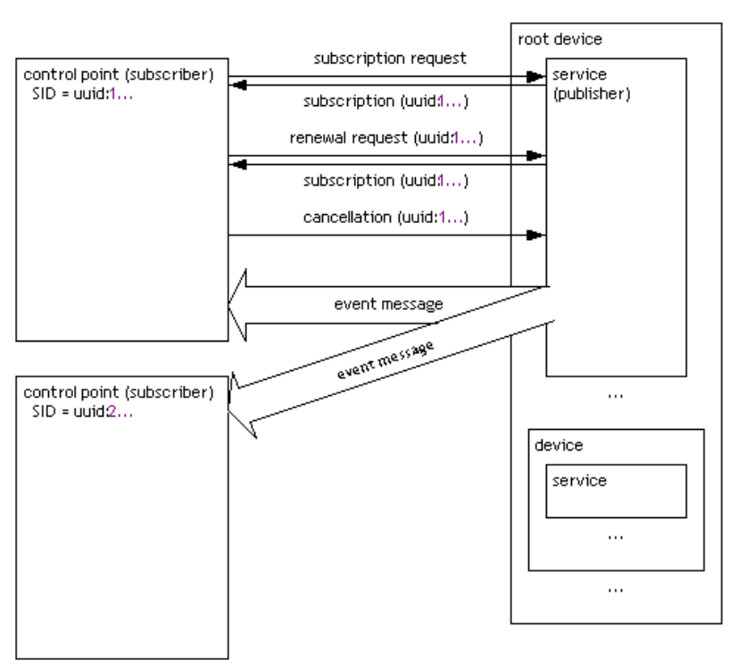

UPnP Process
This is a short summary about UPnP and how it is used in Opera. We will analyze a bit every phase: discovery, description, control and event notification.
Discovery
When a new device is available, it broadcast a Multicast UDP packet to notify its presence:

According to the UPnP specifications, the packet is:
NOTIFY * HTTP/1.1
HOST: 239.255.255.250:1900
CACHE-CONTROL: max-age = seconds until advertisement expires
LOCATION: URL for UPnP description for root device
NT: search target
NTS: ssdp:alive
SERVER: OS/version UPnP/1.0 product/version
USN: advertisement UUID
This is a true packet sent by one of our test routers:
NOTIFY * HTTP/1.1
HOST: 239.255.255.250:1900
CACHE-CONTROL: max-age=180
Location: http://192.168.1.1:5431/dyndev/uuid:001c-1044-11f2000099dc
NT: upnp:rootdevice
NTS: ssdp:alive
SERVER:LINUX/2.4 UPnP/1.0 BRCM400/1.0
USN: uuid:001c-1044-11f2000099dc::upnp:rootdevice
Control points (like Opera Unite when it tries to open a port) usually also specifically ask for discovery, broadcasting a Multicast UDP message.
This is the current packet generated by Opera Unite, when it looks for an IGD device (a router):
M-SEARCH * HTTP/1.1
HOST:239.255.255.250:1900
ST:urn:schemas-upnp-org:device:InternetGatewayDevice:1
MAN:"ssdp:discover"
MX:3
User-Agent:Opera Unite
In response to an M-SEARCH, the specifications said that a device send a Unicast UDP packet with the description URL:
HTTP/1.1 200 OK
CACHE-CONTROL: max-age = seconds until advertisement expires
DATE: when response was generated
EXT:
LOCATION: URL for UPnP description for root device
SERVER: OS/version UPnP/1.0 product/version
ST: search target
USN: advertisement UUID
And this is a true packet:
HTTP/1.1 200 OK
EXT:
SERVER: ipOS/7.4 UPnP/1.0 Ubicom/1.0
ST: urn:schemas-upnp-org:device:InternetGatewayDevice:1
LOCATION: http://192.168.0.1/root.sxml
CACHE-CONTROL: max-age=1800
USN: uuid:15E9C36D-BF44-36F1-8EBE-B1B15774990F::urn:schemas-upnp-org:device:InternetGatewayDevice:1
Content-Length: 0
Description
The URL provided in the discovery phase (URL Location) is used to ask the device (via TCP) what is it and what kind of services it supports.

The message received is defined by the specifications as:
<?xml version="1.0"?>
<root xmlns="urn:schemas-upnp-org:device-1-0">
<specVersion>
<major>1</major>
<minor>0</minor>
</specVersion>
<URLBase>base URL for all relative URLs</URLBase>
<device>
<deviceType>urn:schemas-upnp-org:device:deviceType:v</deviceType>
<friendlyName>short user-friendly title</friendlyName>
<manufacturer>manufacturer name</manufacturer>
<manufacturerURL>URL to manufacturer site</manufacturerURL>
<modelDescription>long user-friendly title</modelDescription>
<modelName>model name</modelName>
<modelNumber>model number</modelNumber>
<modelURL>URL to model site</modelURL>
<serialNumber>manufacturer's serial number</serialNumber>
<UDN>uuid:UUID</UDN>
<UPC>Universal Product Code</UPC>
<iconList>
<icon>
<mimetype>image/format</mimetype>
<width>horizontal pixels</width>
<height>vertical pixels</height>
<depth>color depth</depth>
<url>URL to icon</url>
</icon>
XML to declare other icons, if any, go here
</iconList>
<serviceList>
<service>
<serviceType>urn:schemas-upnp-org:service:serviceType:v</serviceType>
<serviceId>urn:upnp-org:serviceId:serviceID</serviceId>
<SCPDURL>URL to service description</SCPDURL>
<controlURL>URL for control</controlURL>
<eventSubURL>URL for eventing</eventSubURL>
</service>
Declarations for other services defined by a UPnP Forum working committee (if any)
go here
Declarations for other services added by UPnP vendor (if any) go here
</serviceList>
<deviceList>
Description of embedded devices defined by a UPnP Forum working committee (if any)
go here
Description of embedded devices added by UPnP vendor (if any) go here
</deviceList>
<presentationURL>URL for presentation</presentationURL>
</device>
</root>
And this is a true packet sent by one of the routers:
<?xml version="1.0"?>
<root xmlns="urn:schemas-upnp-org:device-1-0">
<specVersion>
<major>1</major>
<minor>0</minor>
</specVersion>
<device>
<deviceType>urn:schemas-upnp-org:device:InternetGatewayDevice:1</deviceType>
<friendlyName>Residential Gateway Device</friendlyName>
<manufacturer>Linksys Inc.</manufacturer>
<manufacturerURL>http://www.linksys.com/</manufacturerURL>
<modelDescription>Internet Access Server</modelDescription>
<modelName>WRT54GL</modelName>
<modelNumber>v4.30.7</modelNumber>
<modelURL>http://www.linksys.com/</modelURL>
<UDN>uuid:001c-1044-11f2000099dc</UDN>
<serviceList>
<service>
<serviceType>urn:schemas-upnp-org:service:Layer3Forwarding:1</serviceType>
<serviceId>urn:upnp-org:serviceId:Layer3Forwarding:11</serviceId>
<controlURL>/uuid:001c-1044-11f2000099dc/Layer3Forwarding:1</controlURL>
<eventSubURL>/uuid:001c-1044-11f2000099dc/Layer3Forwarding:1</eventSubURL>
<SCPDURL>/dynsvc/Layer3Forwarding:1.xml</SCPDURL>
</service>
</serviceList>
<deviceList>
<device>
<deviceType>urn:schemas-upnp-org:device:WANDevice:1</deviceType>
<friendlyName>urn:schemas-upnp-org:device:WANDevice:1</friendlyName>
<manufacturer>Linksys Inc.</manufacturer>
<manufacturerURL>http://www.linksys.com/</manufacturerURL>
<modelDescription>Internet Access Server</modelDescription>
<modelName>WRT54GL</modelName>
<modelNumber>v4.30.7</modelNumber>
<modelURL>http://www.linksys.com/</modelURL>
<UDN>uuid:001c-1044-11f2010099dc</UDN>
<serviceList>
<service>
<serviceType>urn:schemas-upnp-org:service:WANCommonInterfaceConfig:1</serviceType>
<serviceId>urn:upnp-org:serviceId:WANCommonIFC1</serviceId>
<controlURL>/uuid:001c-1044-11f2010099dc/WANCommonInterfaceConfig:1</controlURL>
<eventSubURL>/uuid:001c-1044-11f2010099dc/WANCommonInterfaceConfig:1</eventSubURL>
<SCPDURL>/dynsvc/WANCommonInterfaceConfig:1.xml</SCPDURL>
</service>
</serviceList>
<deviceList>
<device>;
<deviceType>urn:schemas-upnp-org:device:WANConnectionDevice:1</deviceType>
<friendlyName>urn:schemas-upnp-org:device:WANConnectionDevice:1</friendlyName>
<manufacturer>Linksys Inc.</manufacturer>
<manufacturerURL>http://www.linksys.com/</manufacturerURL>
<modelDescription>Internet Access Server</modelDescription>
<modelName>WRT54GL</modelName>
<modelNumber>v4.30.7</modelNumber>
<modelURL>http://www.linksys.com/</modelURL>
<UDN>uuid:001c-1044-11f2020099dc</UDN>
<serviceList>
<service>
<serviceType>urn:schemas-upnp-org:service:WANIPConnection:1</serviceType>
<serviceId>urn:upnp-org:serviceId:WANIPConn1</serviceId>
<controlURL>/uuid:001c-1044-11f2020099dc/WANIPConnection:1</controlURL>
<eventSubURL>/uuid:001c-1044-11f2020099dc/WANIPConnection:1</eventSubURL>
<SCPDURL>/dynsvc/WANIPConnection:1.xml</SCPDURL>
</service>
<service>
<serviceType>urn:schemas-upnp-org:service:WANPPPConnection:1</serviceType>
<serviceId>urn:upnp-org:serviceId:WANPPPConn1</serviceId>
<controlURL>/uuid:001c-1044-11f2020099dc/WANPPPConnection:1</controlURL>
<eventSubURL>/uuid:001c-1044-11f2020099dc/WANPPPConnection:1</eventSubURL>
<SCPDURL>/dynsvc/WANPPPConnection:1.xml</SCPDURL>
</service>
</serviceList>
</device>
</deviceList>
</device>
</deviceList>
</device>
</root>
Currentyl Opera Unite does not asks for details about the services used, because they are standardized.
Control
In the Control phase, the control point use the controlURLs to use the services required and to access internal variables.
.
The message received is defined by the specifications as:
POST path of control URL HTTP/1.1
HOST: host of control URL:port of control URL
CONTENT-LENGTH: bytes in body
CONTENT-TYPE: text/xml; charset="utf-8"
SOAPACTION: "urn:schemas-upnp-org:service:serviceType:v#actionName"
<?xml version="1.0"?>
<s:Envelope
xmlns:s="http://schemas.xmlsoap.org/soap/envelope/"
s:encodingStyle="http://schemas.xmlsoap.org/soap/encoding/">
<s:Body>
<u:actionName xmlns:u="urn:schemas-upnp-org:service:serviceType:v">
<argumentName>in arg value</argumentName>
other in args and their values go here, if any
</u:actionName>
</s:Body>
</s:Envelope>
This is a true packet sent from Opera to one of the routers, to open the port 17002:
POST /wipconn HTTP/1.1
User-Agent: Opera/9.70 (WinGogi; U; en) Presto/2.3.0
Host: 192.168.0.1:4444
Accept: text/html, application/xml;q=0.9, application/xhtml+xml, application/x-obml2d, image/png, image/jpeg, image/gif, image/x-xbitmap, */*;q=0.1
Accept-Language: nb-NO,nb;q=0.9,no-NO;q=0.8,no;q=0.7,en;q=0.6
Accept-Charset: iso-8859-1, utf-8, utf-16, *;q=0.1
Connection: Keep-Alive, TE
TE: deflate, gzip, chunked, identity, trailers
Content-Length: 627
CONTENT-TYPE: text/xml;charset="utf-8";
TIMEOUT: infinite
SOAPACTION: "urn:schemas-upnp-org:service:WANIPConnection:1#AddPortMapping"
<?xml version="1.0"?>
<s:Envelope xmlns:s="http://schemas.xmlsoap.org/soap/envelope/" s:encodingStyle="http://schemas.xmlsoap.org/soap/encoding/">
<s:Body>
<u:AddPortMapping xmlns:u="urn:schemas-upnp-org:service:WANIPConnection:1">
<NewRemoteHost></NewRemoteHost>
<NewExternalPort>17002</NewExternalPort>
<NewProtocol>TCP</NewProtocol>
<NewInternalPort>17002</NewInternalPort>
<NewInternalClient>192.168.0.199</NewInternalClient>
<NewEnabled>1</NewEnabled>
<NewPortMappingDescription>Opera Unite - UPnP Discovery 9:29:44 2009-5-11</NewPortMappingDescription>
<NewLeaseDuration>0</NewLeaseDuration>
</u:AddPortMapping>
</s:Body>
</s:Envelope>
And this is the true packet with the answer from the router:
HTTP/1.1 200 OK
SERVER: ipOS/7.4 UPnP/1.0 ipUPnP/1.0
CONTENT-TYPE: text/xml
EXT:
Connection: close
<?xml version="1.0" encoding="UTF-8" standalone="yes"?>
<soap:Envelope xmlns:soap="http://schemas.xmlsoap.org/soap/envelope/" soap:encodingStyle="http://schemas.xmlsoap.org/soap/encoding/">
<soap:Body>
<u:AddPortMappingResponse xmlns:u="urn:schemas-upnp-org:service:WANIPConnection:1"></u:AddPortMappingResponse>
</soap:Body>
</soap:Envelope>
As a side note, it is worth to mention that errors (for example if the port is already in sue) are deliverd using an HTTP response code (for example 500, Internal Server Error, which is a bit surprising).
Events
Opera currently does not use events. Control points interested in some events, can subscribe to them.
.
According to the UPnP specifications, the packet is:
SUBSCRIBE publisher path HTTP/1.1
HOST: publisher host:publisher port
CALLBACK: <delivery URL>
NT: upnp:event
TIMEOUT: Second-requested subscription duration
According to the UPnP specifications, the answer packet is:
HTTP/1.1 200 OK
DATE: when response was generated
SERVER: OS/version UPnP/1.0 product/version
SID: uuid:subscription-UUID
TIMEOUT: Second-actual subscription duration